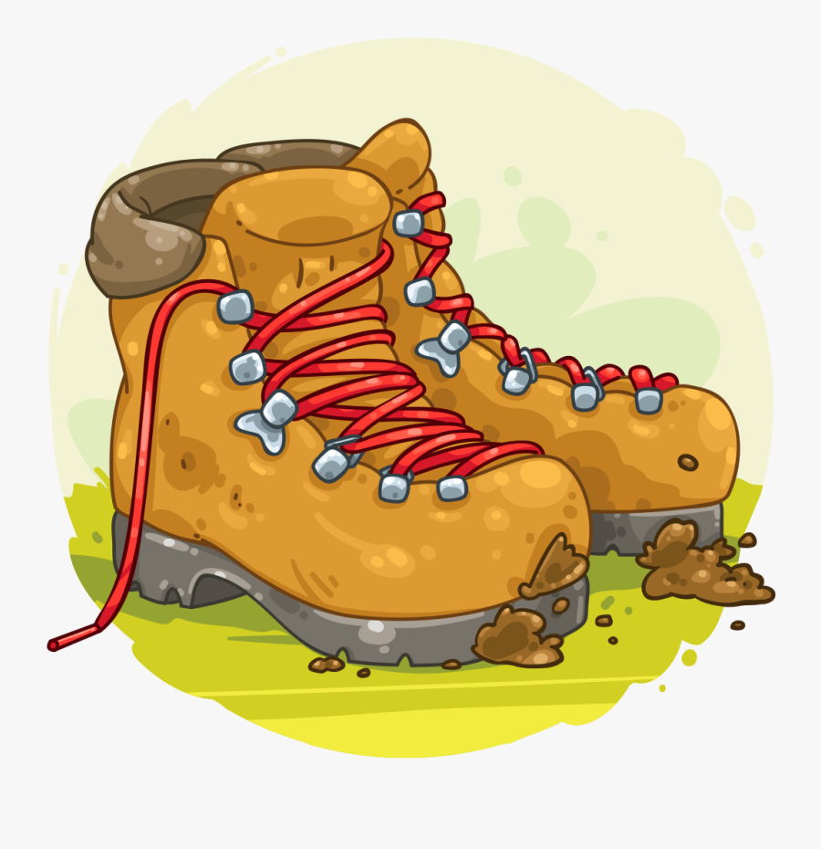
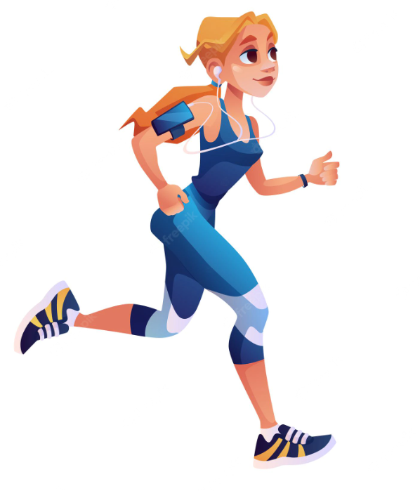
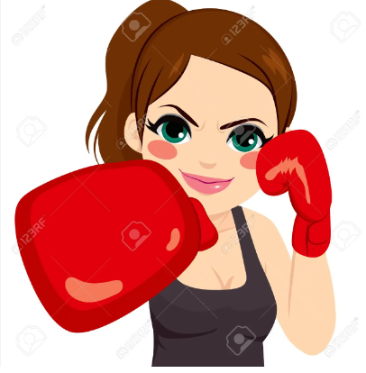
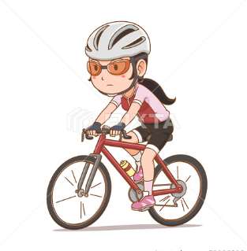

Hobbies
My favorite Hobbies:
- Hiking

Getting out into nature decreases what psychologists call 'rumination', which are negative thought patterns that play over and over in our heads such as dwelling on embarrassing or
disappointing moments or thinking about everything we think is wrong with our lives. Never underestimate the 'happiness effect' of being outdoors.
- Running

Running. A sport that can be done anywhere and the only required equipment is a determined mindset, a good pair of running shoes and some comfortable moisture-wicking clothing.
Besides being convenient and relatively inexpensive, running offers numerous health benefits.
- Boxing

Boxing is one of the most rewarding combat sports you can decide to learn. It’s the sweet science that always keeps giving. It teaches you how to hit without getting hit and how to
use footwork to evade attacks or put yourself in a position to launch your attacks.
Cycling 
Cycling can help to protect you from serious diseases such as stroke, heart attack, some cancers, depression, diabetes, obesity and arthritis.